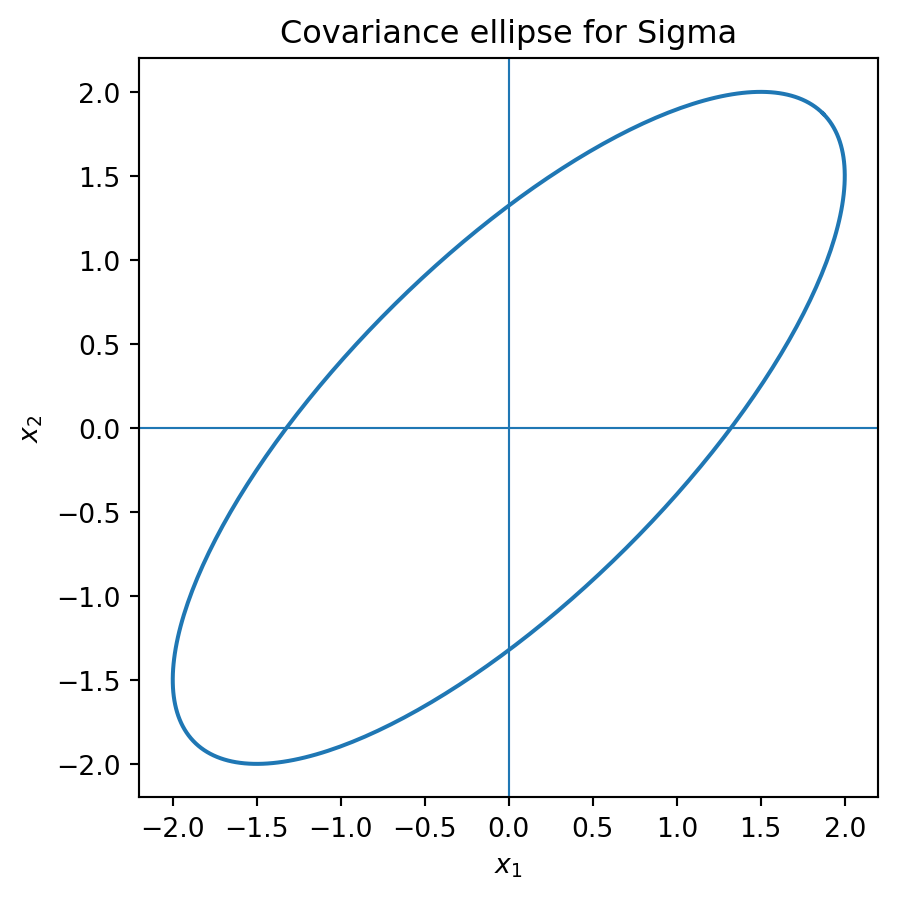
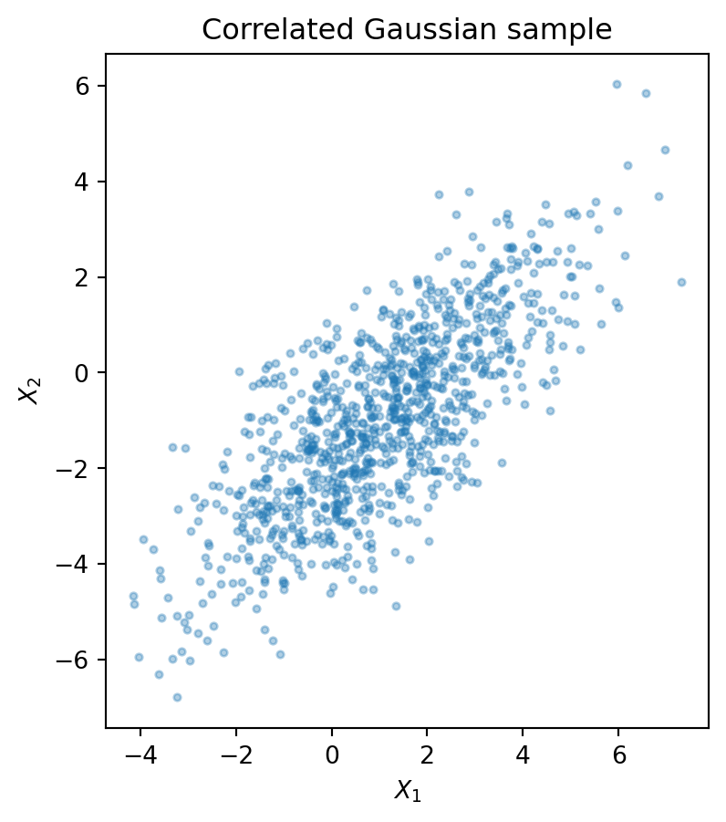
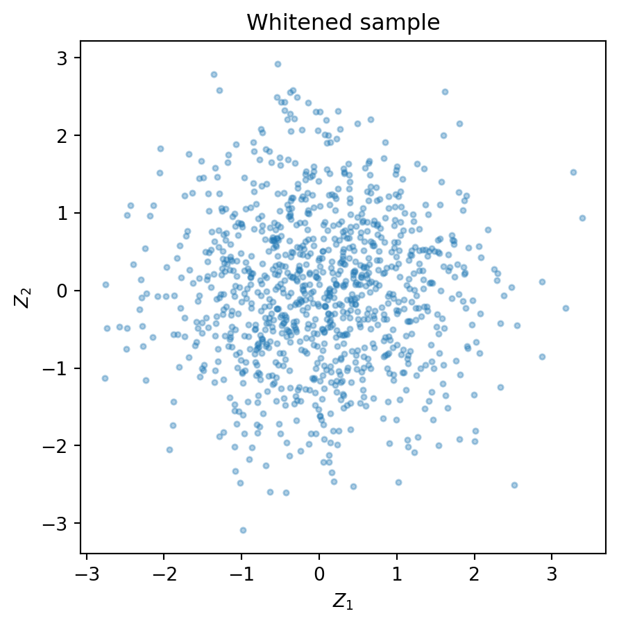

Code
import numpy as np
X = np.array([[2.0, 1.0],
[4.0, 3.0],
[6.0, 5.0],
[8.0, 7.0]])
X.mean(axis=0)array([5., 4.])Random Vectors, Covariance Geometry, Gaussian Models, and Random Matrices
By the end of this chapter, students should be able to:
A data point is often not a single number. It may be a vector of exam scores, gene expression levels, pixel intensities, financial returns, sensor measurements, or neural-network features. Once data become vectors, probability becomes geometric.
A random vector has a center, measured by its expectation vector. It has a shape, measured by its covariance matrix. Its most important directions are eigenvectors. Its natural distance is often a quadratic form. A Gaussian distribution is not only a bell curve; in high dimensions, it is an ellipsoid controlled by a positive semidefinite matrix.
The guiding idea of this chapter is:
High-dimensional probability becomes understandable when we study its linear transformations and covariance geometry.
A real-valued random variable is a function \[ X:\Omega\to \mathbb R \] from a sample space \(\Omega\) to the real numbers.
A random vector is a function \[ X:\Omega\to \mathbb R^d. \] We usually write \[ X=\begin{bmatrix}X_1\\X_2\\ \vdots \\ X_d\end{bmatrix}, \] where each coordinate \(X_i\) is a real-valued random variable.
A random vector should be viewed as a data point whose value changes randomly. For example, a randomly selected person may have a feature vector \[ X=\begin{bmatrix} \text{height}\\ \text{weight}\\ \text{systolic blood pressure} \end{bmatrix}\in \mathbb R^3. \] A randomly sampled grayscale \(28\times 28\) image can be vectorized as \[ X\in \mathbb R^{784}. \] The dimension is not a small detail. In modern data science, dimension changes geometry.
Let \(X=(X_1,\ldots,X_d)^T\) be a random vector with \(\mathbb E|X_i|<\infty\) for each coordinate. The expectation vector, or mean vector, is \[ \mu=\mathbb E[X] :=\begin{bmatrix} \mathbb E[X_1]\\ \vdots\\ \mathbb E[X_d] \end{bmatrix}\in \mathbb R^d. \]
The mean vector is the probabilistic analogue of the center of mass of a cloud of data.
Let \(X,Y\in\mathbb R^d\) be random vectors with finite expectations, and let \(a,b\in\mathbb R\). Then \[ \mathbb E[aX+bY]=a\mathbb E[X]+b\mathbb E[Y]. \] If \(A\in\mathbb R^{m\times d}\) and \(c\in\mathbb R^m\), then \[ \mathbb E[AX+c]=A\mathbb E[X]+c. \]
The first identity follows coordinate by coordinate from the usual linearity of expectation. For the affine transformation, \[ AX+c =\begin{bmatrix} \sum_{j=1}^d a_{1j}X_j+c_1\\ \vdots\\ \sum_{j=1}^d a_{mj}X_j+c_m \end{bmatrix}. \] Taking expectation in each coordinate gives \[ \mathbb E[AX+c] =\begin{bmatrix} \sum_{j=1}^d a_{1j}\mathbb E[X_j]+c_1\\ \vdots\\ \sum_{j=1}^d a_{mj}\mathbb E[X_j]+c_m \end{bmatrix} =A\mathbb E[X]+c. \]
Let data vectors \(x_1,\ldots,x_n\in\mathbb R^d\) be sampled uniformly from a data set. Then the empirical random vector \(X\) takes each value \(x_i\) with probability \(1/n\), so \[ \mathbb E[X]=\frac1n\sum_{i=1}^n x_i. \] Thus the usual sample mean is the expectation of the empirical distribution.
import numpy as np
X = np.array([[2.0, 1.0],
[4.0, 3.0],
[6.0, 5.0],
[8.0, 7.0]])
X.mean(axis=0)array([5., 4.])The mean tells us where the data cloud is centered. The covariance matrix tells us how the cloud spreads and in which directions.
Let \(X\in\mathbb R^d\) be a random vector with mean \(\mu=\mathbb E[X]\) and finite second moments. The covariance matrix of \(X\) is \[ \Sigma=\operatorname{Cov}(X):= \mathbb E\big[(X-\mu)(X-\mu)^T\big]\in\mathbb R^{d\times d}. \] Equivalently, the \((i,j)\) entry is \[ \Sigma_{ij}=\operatorname{Cov}(X_i,X_j) =\mathbb E\big[(X_i-\mu_i)(X_j-\mu_j)\big]. \]
For every random vector \(X\in\mathbb R^d\) with finite second moments, its covariance matrix \(\Sigma\) satisfies:
Symmetry follows because \[ \Sigma^T =\mathbb E\left[((X-\mu)(X-\mu)^T)^T\right] =\mathbb E\left[(X-\mu)(X-\mu)^T\right] =\Sigma. \] For any \(a\in\mathbb R^d\), \[ a^T\Sigma a =a^T\mathbb E[(X-\mu)(X-\mu)^T]a =\mathbb E\left[a^T(X-\mu)(X-\mu)^Ta\right]. \] The scalar inside the expectation is \[ \left(a^T(X-\mu)\right)^2. \] Therefore \[ a^T\Sigma a =\mathbb E\left[\left(a^T(X-\mu)\right)^2\right] =\operatorname{Var}(a^T X)\ge 0. \] Hence \(\Sigma\) is positive semidefinite.
Consider \[ \Sigma=\begin{bmatrix}4&3\\3&4\end{bmatrix}. \] The eigenvectors are proportional to \((1,1)\) and \((1,-1)\), with eigenvalues \(7\) and \(1\). Therefore the random vector has larger variance along the diagonal direction \((1,1)\) than along \((1,-1)\).
Sigma = np.array([[4.0, 3.0], [3.0, 4.0]])
vals, vecs = np.linalg.eigh(Sigma)
idx = vals.argsort()[::-1]
vals, vecs = vals[idx], vecs[:, idx]
vals, vecs(array([7., 1.]),
array([[ 0.70710678, -0.70710678],
[ 0.70710678, 0.70710678]]))import matplotlib.pyplot as plt
theta = np.linspace(0, 2*np.pi, 300)
circle = np.vstack([np.cos(theta), np.sin(theta)])
L = vecs @ np.diag(np.sqrt(vals))
ellipse = L @ circle
plt.figure(figsize=(5,5))
plt.plot(ellipse[0], ellipse[1])
plt.axhline(0, linewidth=0.8)
plt.axvline(0, linewidth=0.8)
plt.gca().set_aspect('equal', adjustable='box')
plt.title('Covariance ellipse for Sigma')
plt.xlabel('$x_1$')
plt.ylabel('$x_2$')
plt.show()
Linear transformations are the main reason covariance matrices are useful. If a random vector is passed through a matrix, its mean and covariance transform by clean formulas.
Let \(X\in\mathbb R^d\) have mean \(\mu\) and covariance matrix \(\Sigma\). Let \[ Y=AX+b, \] where \(A\in\mathbb R^{m\times d}\) and \(b\in\mathbb R^m\). Then \[ \mathbb E[Y]=A\mu+b \] and \[ \operatorname{Cov}(Y)=A\Sigma A^T. \]
The formula for the mean follows from linearity of expectation. For covariance, \[ Y-\mathbb E[Y]=AX+b-(A\mu+b)=A(X-\mu). \] Therefore \[ \operatorname{Cov}(Y) =\mathbb E[(Y-\mathbb E[Y])(Y-\mathbb E[Y])^T] =\mathbb E[A(X-\mu)(X-\mu)^TA^T] =A\Sigma A^T. \]
If \(a\in\mathbb R^d\) and \[ Y=a^T X, \] then \[ \mathbb E[Y]=a^T\mu, \qquad \operatorname{Var}(Y)=a^T\Sigma a. \] This is the bridge between covariance matrices and Rayleigh quotients.
Because \(\Sigma\) is symmetric positive semidefinite, the spectral theorem applies: \[ \Sigma=Q\Lambda Q^T, \] where \(Q=[q_1,\ldots,q_d]\) is orthogonal and \[ \Lambda=\operatorname{diag}(\lambda_1,\ldots,\lambda_d), \qquad \lambda_1\ge \lambda_2\ge\cdots\ge \lambda_d\ge 0. \] The eigenvectors \(q_i\) are called principal directions, and the eigenvalues \(\lambda_i\) are variances in those directions.
Let \(\Sigma\in\mathbb R^{d\times d}\) be a covariance matrix. Then \[ \max_{\|a\|=1}\operatorname{Var}(a^TX) =\max_{\|a\|=1}a^T\Sigma a =\lambda_1, \] where \(\lambda_1\) is the largest eigenvalue of \(\Sigma\). The maximum is achieved when \(a\) is a unit eigenvector for \(\lambda_1\).
Write \(\Sigma=Q\Lambda Q^T\). Let \(y=Q^Ta\). Since \(Q\) is orthogonal, \(\|y\|=\|a\|=1\). Then \[ a^T\Sigma a=a^TQ\Lambda Q^Ta=y^T\Lambda y=\sum_{i=1}^d \lambda_i y_i^2. \] Since \(\sum_i y_i^2=1\) and \(\lambda_1\ge \lambda_i\), \[ \sum_{i=1}^d \lambda_i y_i^2\le \lambda_1\sum_{i=1}^d y_i^2=\lambda_1. \] Equality occurs when \(y=e_1\), equivalently \(a=q_1\).
This theorem is the mathematical heart of PCA: find the direction of maximum projected variance.
Suppose \(\Sigma\) is positive definite and has spectral decomposition \[ \Sigma=Q\Lambda Q^T. \] A whitening matrix is \[ W=\Lambda^{-1/2}Q^T. \] If \(X\) has mean \(\mu\) and covariance \(\Sigma\), then \[ Z=W(X-\mu) \] is called a whitened version of \(X\).
If \(\Sigma\) is positive definite and \(W=\Lambda^{-1/2}Q^T\), then \[ \operatorname{Cov}(W(X-\mu))=I. \]
Using the affine covariance formula, \[ \operatorname{Cov}(W(X-\mu))=W\Sigma W^T. \] Now \[ W\Sigma W^T =\Lambda^{-1/2}Q^T(Q\Lambda Q^T)Q\Lambda^{-1/2} =\Lambda^{-1/2}\Lambda\Lambda^{-1/2}=I. \]
np.random.seed(0)
mu = np.array([1.0, -1.0])
Sigma = np.array([[4.0, 3.0], [3.0, 4.0]])
X = np.random.multivariate_normal(mu, Sigma, size=5000)
sample_mean = X.mean(axis=0)
sample_cov = np.cov(X, rowvar=False)
lam, Q = np.linalg.eigh(sample_cov)
idx = lam.argsort()[::-1]
lam, Q = lam[idx], Q[:, idx]
W = np.diag(1/np.sqrt(lam)) @ Q.T
Z = (W @ (X - sample_mean).T).T
np.cov(Z, rowvar=False)array([[1.00000000e+00, 1.16019305e-16],
[1.16019305e-16, 1.00000000e+00]])Gaussian random vectors are the probability distributions most directly governed by linear algebra.
A random vector \(X\in\mathbb R^d\) has a multivariate Gaussian distribution with mean \(\mu\) and covariance matrix \(\Sigma\), written \[ X\sim N(\mu,\Sigma), \] if every linear projection \(a^TX\) is a one-dimensional Gaussian random variable.
If \(\Sigma\) is positive definite, its density is \[ p(x)=\frac{1}{(2\pi)^{d/2}\det(\Sigma)^{1/2}} \exp\left(-\frac12(x-\mu)^T\Sigma^{-1}(x-\mu)\right). \]
The quantity \[ (x-\mu)^T\Sigma^{-1}(x-\mu) \] is the squared Mahalanobis distance from \(x\) to \(\mu\). It is ordinary squared Euclidean distance after whitening.
If \[ X\sim N(\mu,\Sigma) \] and \(Y=AX+b\), then \[ Y\sim N(A\mu+b,A\Sigma A^T). \]
For any vector \(c\), \[ c^TY=c^T(AX+b)=(A^Tc)^TX+c^Tb. \] This is an affine transformation of the one-dimensional Gaussian random variable \((A^Tc)^TX\). Hence \(c^TY\) is Gaussian. Therefore \(Y\) is multivariate Gaussian. Its mean and covariance follow from the affine transformation formulas.
In high dimensions, geometric intuition changes. Random vectors often concentrate near shells, random directions are almost orthogonal, and sample covariance becomes difficult when dimension is comparable to sample size.
Let \[ Z\sim N(0,I_d). \] Then \[ \mathbb E\|Z\|^2=d. \] Moreover, \(\|Z\|\) is typically close to \(\sqrt d\) when \(d\) is large.
Since \(Z=(Z_1,\ldots,Z_d)^T\) with independent \(Z_i\sim N(0,1)\), \[ \|Z\|^2=Z_1^2+\cdots+Z_d^2. \] Taking expectation gives \[ \mathbb E\|Z\|^2=\sum_{i=1}^d\mathbb E[Z_i^2]=d. \] The concentration statement follows from the law of large numbers applied to \(d^{-1}\sum_i Z_i^2\).
Let \(u,v\) be independent random unit vectors in \(\mathbb R^d\), uniformly distributed on the unit sphere. Then \[ \mathbb E[u^Tv]=0, \qquad \mathbb E[(u^Tv)^2]=\frac1d. \] Thus a typical inner product has size about \(1/\sqrt d\).
By symmetry, \(\mathbb E[u^Tv]=0\). Fix \(u\). Since \(v\) is uniformly distributed on the sphere, rotate coordinates so that \(u=e_1\). Then \[ (u^Tv)^2=v_1^2. \] All coordinates of \(v\) have equal second moment. Since \[ v_1^2+\cdots+v_d^2=1, \] we have \[ d\mathbb E[v_1^2]=1. \] Therefore \(\mathbb E[v_1^2]=1/d\).
np.random.seed(1)
for d in [10, 100, 1000, 5000]:
u = np.random.randn(d); u = u/np.linalg.norm(u)
v = np.random.randn(d); v = v/np.linalg.norm(v)
print(d, np.dot(u, v))10 0.6578379500828824
100 0.17564795790217588
1000 0.022071952028746136
5000 -0.001563889425004843Suppose we observe \(n\) independent data vectors \[ x_1,\ldots,x_n\in\mathbb R^d. \] Place them as columns of a data matrix \[ X=\begin{bmatrix}x_1&x_2&\cdots&x_n\end{bmatrix}\in\mathbb R^{d\times n}. \] Let \[ \bar x=\frac1n\sum_{i=1}^n x_i \] and define the centered data matrix \[ X_c=\begin{bmatrix}x_1-\bar x&\cdots&x_n-\bar x\end{bmatrix}. \]
The sample covariance matrix is \[ S=\frac1{n-1}X_cX_c^T. \] Some authors use \(1/n\) instead of \(1/(n-1)\) depending on whether the goal is an unbiased estimator or a maximum likelihood estimator.
The sample covariance matrix \(S\) is symmetric positive semidefinite.
Symmetry is clear: \[ S^T=\frac1{n-1}(X_cX_c^T)^T=S. \] For any \(a\in\mathbb R^d\), \[ a^TSa=\frac1{n-1}a^TX_cX_c^Ta =\frac1{n-1}\|X_c^Ta\|^2\ge 0. \]
Because \[ \operatorname{rank}(S)=\operatorname{rank}(X_cX_c^T) \le \operatorname{rank}(X_c)\le \min(d,n-1), \] if \(d>n-1\), then \(S\) is singular. This is common when the number of features is larger than the number of samples.
A random matrix is a matrix \[ A=(A_{ij}) \] whose entries are random variables. Important examples include:
Let \(X_1,\ldots,X_n\) be independent copies of a random vector \(X\in\mathbb R^d\) with mean \(\mu\) and covariance \(\Sigma\). If \[ S=\frac1{n-1}\sum_{i=1}^n(X_i-\bar X)(X_i-\bar X)^T, \] then \[ \mathbb E[S]=\Sigma. \]
For a scalar random variable with variance \(\sigma^2\), \[ \mathbb E\left[\sum_{i=1}^n (X_i-\bar X)^2\right]=(n-1)\sigma^2. \] Apply this scalar identity to every projected random variable \(a^TX\). Then \[ a^T\mathbb E[S]a =\mathbb E[a^TSa] =\operatorname{Var}(a^TX) =a^T\Sigma a \] for every \(a\in\mathbb R^d\). Therefore \(\mathbb E[S]=\Sigma\).
np.random.seed(2)
d = 100
n = 300
X = np.random.randn(d, n)
S = (1/n) * X @ X.T
eigvals = np.linalg.eigvalsh(S)
print(eigvals[0], eigvals[-1], eigvals.mean())0.18953466266047408 2.532064658127176 1.0079767461777458Gaussian distributions are especially important because conditioning and prediction become linear algebra.
Let \(Y\) be a scalar random variable and let \(X\in\mathbb R^d\) be a random vector. Consider predictors of the form \[ \widehat Y=b+a^TX. \] The best linear predictor in mean squared error solves \[ \min_{b,a}\mathbb E[(Y-b-a^TX)^2]. \] If \(\Sigma_{XX}=\operatorname{Cov}(X)\) is invertible, then \[ a=\Sigma_{XX}^{-1}\operatorname{Cov}(X,Y), \qquad b=\mathbb E[Y]-a^T\mathbb E[X]. \]
Center the variables: \[ \widetilde Y=Y-\mathbb E[Y], \qquad \widetilde X=X-\mathbb E[X]. \] The optimal intercept is \(b=\mathbb E[Y]-a^T\mathbb E[X]\), and the problem becomes \[ \min_a \mathbb E[(\widetilde Y-a^T\widetilde X)^2]. \] Differentiate the quadratic objective: \[ \nabla_a\mathbb E[(\widetilde Y-a^T\widetilde X)^2] =-2\mathbb E[\widetilde X\widetilde Y]+2\mathbb E[\widetilde X\widetilde X^T]a. \] Setting this equal to zero gives \[ \Sigma_{XX}a=\operatorname{Cov}(X,Y), \] so \[ a=\Sigma_{XX}^{-1}\operatorname{Cov}(X,Y). \]
import numpy as np
import matplotlib.pyplot as plt
np.random.seed(10)
mu = np.array([1.0, -1.0])
Sigma = np.array([[4.0, 3.0], [3.0, 4.0]])
X = np.random.multivariate_normal(mu, Sigma, size=1000)
print("sample mean", X.mean(axis=0))
print("sample covariance")
print(np.cov(X, rowvar=False))
plt.figure(figsize=(6,5))
plt.scatter(X[:,0], X[:,1], s=8, alpha=0.35)
plt.gca().set_aspect('equal', adjustable='box')
plt.title('Correlated Gaussian sample')
plt.xlabel('$X_1$')
plt.ylabel('$X_2$')
plt.show()sample mean [ 1.03668807 -0.9770385 ]
sample covariance
[[3.77907222 2.86210569]
[2.86210569 3.78868285]]
# Whitening the sample
sample_mean = X.mean(axis=0)
sample_cov = np.cov(X, rowvar=False)
lam, Q = np.linalg.eigh(sample_cov)
idx = lam.argsort()[::-1]
lam, Q = lam[idx], Q[:, idx]
W = np.diag(1/np.sqrt(lam)) @ Q.T
Z = (W @ (X - sample_mean).T).T
print(np.cov(Z, rowvar=False))
plt.figure(figsize=(6,5))
plt.scatter(Z[:,0], Z[:,1], s=8, alpha=0.35)
plt.gca().set_aspect('equal', adjustable='box')
plt.title('Whitened sample')
plt.xlabel('$Z_1$')
plt.ylabel('$Z_2$')
plt.show()[[ 1.00000000e+00 -2.72054651e-16]
[-2.72054651e-16 1.00000000e+00]]
Let \[ \Sigma=\begin{bmatrix}9&0\\0&1\end{bmatrix}. \] Find the variance of \(a^TX\) for \(a=(\cos\theta,\sin\theta)^T\).
We compute \[ a^T\Sigma a =\begin{bmatrix}\cos\theta&\sin\theta\end{bmatrix} \begin{bmatrix}9&0\\0&1\end{bmatrix} \begin{bmatrix}\cos\theta\\\sin\theta\end{bmatrix} =9\cos^2\theta+\sin^2\theta. \] The maximum is \(9\) at \(\theta=0\) and the minimum is \(1\) at \(\theta=\pi/2\).
Show that if \(Y=AX+b\), then the translation vector \(b\) changes the mean but not the covariance.
The mean is \[ \mathbb E[Y]=A\mathbb E[X]+b. \] However, \[ Y-\mathbb E[Y]=A(X-\mathbb E[X]), \] so \[ \operatorname{Cov}(Y)=A\operatorname{Cov}(X)A^T. \] The vector \(b\) cancels out when centering.
Let \[ \Sigma=\begin{bmatrix}4&3\\3&4\end{bmatrix}. \] Find a whitening transformation.
The eigenvalues are \(7\) and \(1\), with orthonormal eigenvectors \[ q_1=\frac1{\sqrt2}\begin{bmatrix}1\\1\end{bmatrix}, \qquad q_2=\frac1{\sqrt2}\begin{bmatrix}1\\-1\end{bmatrix}. \] Thus \[ Q=\frac1{\sqrt2}\begin{bmatrix}1&1\\1&-1\end{bmatrix}, \qquad \Lambda=\begin{bmatrix}7&0\\0&1\end{bmatrix}. \] One whitening matrix is \[ W=\Lambda^{-1/2}Q^T =\begin{bmatrix}1/\sqrt7&0\\0&1\end{bmatrix}Q^T. \]
Suppose \(X_c\in\mathbb R^{1000\times 50}\) is centered. What can you say about the rank of the sample covariance matrix \(S=\frac1{49}X_cX_c^T\)?
Since the centered columns sum to zero, \[ \operatorname{rank}(X_c)\le 49. \] Therefore \[ \operatorname{rank}(S)\le 49. \] Since \(S\) is a \(1000\times1000\) matrix, it is singular.
Explain why the covariance matrix is more than a table of pairwise covariances.
The covariance matrix defines the quadratic form \[ a\mapsto a^T\Sigma a=\operatorname{Var}(a^TX). \] Thus it measures variance in every direction. Its eigenvectors are principal directions, and its eigenvalues are variances along those directions. Therefore covariance is a geometric operator describing the shape of a probability cloud.
Let \(X\sim N(\mu,\Sigma)\) with \(\Sigma\) positive definite. Show that density contours are ellipsoids.
A density contour has the form \[ (x-\mu)^T\Sigma^{-1}(x-\mu)=c. \] Write \(\Sigma=Q\Lambda Q^T\) and set \(y=Q^T(x-\mu)\). Then \[ \sum_{i=1}^d \frac{y_i^2}{\lambda_i}=c. \] This is an ellipsoid with axes in the eigenvector directions and axis lengths proportional to \(\sqrt{\lambda_i}\).
Give a conceptual proof.
If \(\Sigma q=\lambda q\) with \(\|q\|=1\), then \[ \lambda=q^T\Sigma q=\operatorname{Var}(q^TX)\ge0. \] Therefore all eigenvalues of a covariance matrix are nonnegative.
Use an AI assistant as a study partner, but verify every answer with definitions and computations.
Probability in high dimension is deeply linear algebraic. A random vector is a vector-valued object. Its expectation is a vector. Its covariance is a symmetric positive semidefinite matrix. Gaussian distributions are controlled by covariance ellipsoids. PCA is eigenvalue decomposition of covariance. Whitening is a linear transformation that turns covariance into the identity. Random matrices arise naturally from large random data sets, random graphs, and sample covariance matrices.
The central lesson is:
Linear algebra gives the geometry of probability.